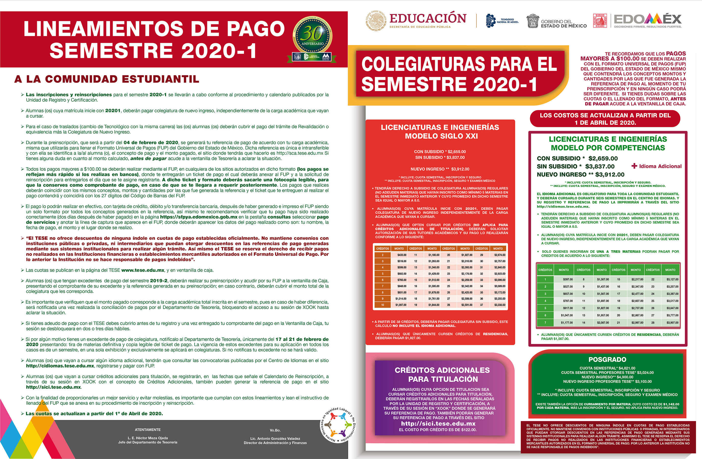

<div class="container-fluid">
  <mat-drawer-container class="side-container">
    <!-- Inicio de la SIDE NAV BAR; Si se desea eliminar se borrara este bloque de codigo y el final mat drawer  -->
    <mat-drawer mode="side" class="sidebar" id="side" #drawer opened>
      <mat-selection-list role="list container" [multiple]="false">
        <a href="inscripcion">
          <mat-list-option>
            Inscripcion
          </mat-list-option>
        </a>
<a href="reinscripcion">
        <mat-list-option role="listitem">
          Reinscripcion
        </mat-list-option>
        </a>
<a href="becas">
        <mat-list-option role="listitem">
          Becas
        </mat-list-option>
         </a>
<a href="cursos">
        <mat-list-option role="listitem">
          Cursos

        </mat-list-option>
      </a>
<a href="titulacion">
        <mat-list-option role="listitem">
          Titulacion
        </mat-list-option>
      </a>
<a href="serviciosocial">
        <mat-list-option role="listitem">
          Servicio Social
        </mat-list-option>
      </a>
      </mat-selection-list>
    </mat-drawer>

    <mat-drawer-content class="side-content">
      <button id="arrow" type="button" mat-button (click)="drawer.toggle()" (click)="open()">
        <mat-icon id="right" class="open">arrow_forward</mat-icon>
        <mat-icon id="left">arrow_back</mat-icon>
      </button>

      <mat-divider class="divider"></mat-divider>

      <!-- Empieza el area para ingresar contenido en el panel lateral -->
      <div class="text-side">
        <div class="box-shadow= 50px 50px;">

          <!-- Breadcrumb, ayuda a que el sitio sea mas agil y el usuario sepa en donde esta localizado, hacia donde puede ir y que paginas le anteceden -->
          <nav aria-label="breadcrumb">
            <ol class="breadcrumb">
              <li class="breadcrumb-item"><a href="home">Home</a></li>
              <li class="breadcrumb-item"><a href="admisionytramites">Admision y Tramites</a></li>
              <li class="breadcrumb-item active" aria-current="page">Reinscripcion</li>
            </ol>
          </nav>

          <!-- Carrousel dentro de la pagina; de no ser necesario puede ser
eliminado sin ningun problema: Para la implementacion en tu componente tendras que realizar las importaciones necesarias en el ts; ir al archivo para mas informacion -->
          <app-carousel [items]="carouselData"></app-carousel>

          <h1 class="titulo">Reinscripcion</h1>

          <div class="card">
            <div class="card-body">
              <h4 class="card-title">
                <div class="Titulo2">Proceso de Reinscripcion;</div>
              </h4>
              <br class="card-text" font-weight="bold"> <span STYLE="font-size:large;color:#414141; text-align: justify;">


                Es el proceso a través del cual los alumnos se reinscriben a estudios de Licenciatura y Maestrías y que cumplan con los requisitos marcados en el Reglamento de Alumnos y de Evaluación del Aprendizaje.<br><br>

                <span STYLE="font-weight: bold;"> Usuarios:</span>  Alumnos inscritos a Licenciaturas o Maestrías
                <br>
                <span STYLE="font-weight: bold;">Documentos que se obtienen:</span>

                 Tira de Materias
                 <br>
                <span STYLE="font-weight: bold;">Vigencia:</span> 6 Meses  </span>
                <br>
                <br>


            </div>
          </div>
    <!-- Seccion de "carrousel", donde se puede enlazar a otras cosas que quiza no consideren poner una sidebar -->


    <mat-divider></mat-divider>
          <mat-divider></mat-divider>
          <mat-divider></mat-divider>
          <div class="accordion accordion-flush" id="accordionFlushExample">
            <div class="accordion-item">
              <h2 class="accordion-header" id="flush-headingOne">
                <button class="accordion-button collapsed" type="button" data-bs-toggle="collapse"
                  data-bs-target="#flush-collapseOne" aria-expanded="false" aria-controls="flush-collapseOne">
               Requisitos y Pasos
                </button>
              </h2>
              <div id="flush-collapseOne" class="accordion-collapse collapse" aria-labelledby="flush-headingOne"
                data-bs-parent="#accordionFlushExample">
                <div class="accordion-body"><ul class="list-group">
                  <li class="list-group-item">1. Solicitud de Reinscripción (FOTESE-URC-16)
                   </li>
                  <li class="list-group-item"> 2. Recibo de pago</li>


                </ul></div>
              </div>
            </div>
            <mat-divider></mat-divider>

        </div>

          <mat-divider></mat-divider>


          <div class="card">
            <div class="card-body">

              <span class="text-center">
                <div class="subtitulo">Duración y fechas para realizarlo</div>

                <span STYLE="text-align: center;font-size:x-large;color:#414141;">
                  <span STYLE="font-weight: bold;">Duracion:</span>
                   <span STYLE="font-weight: bold;;color:#da4b4b;">    3 Minutos</span><br> El tiempo de atención aproximado es de 3 minutos y las fechas son las establecidas en el Calendario Escolar con la programación que publica la Unidad de Registro y Certificación.
                </span>

              </span>
            </div>
          </div>
          <div class="card">
            <div class="card-body">

            </div>
            
          </div>


          <mat-divider></mat-divider>


          <br>
          <div class="card">
            <div class="card-body">

              <span class="text-center">
                <div class="subtitulo">Lugares y horarios</div>

                <span STYLE="text-align: center;font-size:x-large;color:#414141;">

                  <span STYLE="font-weight: bold;">Organismo Responsable:</span> <br>

                  Tecnológico de Estudios Superiores de Ecatepec <br>
                  <span STYLE="font-weight: bold;">Oficinas:</span>
                  <br>Av. Tecnológico S/N C.P. 55210 Col. Valle de Anáhuac, Ecatepec de Morelos, Estado de México Edificio D en Ventanillas
                <br>  <span STYLE="font-weight: bold;">Telefono:</span> <br>
                  01 (55) 50 00 23 42


Horario de Atención:  de Lunes a Viernes de 8:00 A 18:00 horas
                </span>

              </span>
            </div>
          </div>
          <mat-divider></mat-divider>


          <mat-divider></mat-divider>

          <div class="accordion accordion-flush" id="accordionFlushExample">
            <div class="accordion-item">
              <h2 class="accordion-header" id="flush-headingOne">
                <button class="accordion-button collapsed" type="button" data-bs-toggle="collapse"
                  data-bs-target="#flush-collapseOne" aria-expanded="false" aria-controls="flush-collapseOne">
                  Documentos Relacionados
                </button>
              </h2>
              <div id="flush-collapseOne" class="accordion-collapse collapse" aria-labelledby="flush-headingOne"
                data-bs-parent="#accordionFlushExample">
                <div class="accordion-body">


                  

                  <a id="ctl00_ContentPlaceHolder2_Seccion_docs1_liga0" href="../documentos2004/6480_FYKWQAK.doc">Calendario de Reinscipción Escolar 2019-1</a>


                  </div>
              </div>
            </div>
          </div>
          <div class="accordion-item">
            <h2 class="accordion-header" id="flush-headingTwo">
              <button class="accordion-button collapsed" type="button" data-bs-toggle="collapse" data-bs-target="#flush-collapseTwo" aria-expanded="false" aria-controls="flush-collapseTwo">
                Lineamiento de cuotas
              </button>
            </h2>
            <div id="flush-collapseTwo" class="accordion-collapse collapse" aria-labelledby="flush-headingTwo" data-bs-parent="#accordionFlushExample">
              <div class="accordion-body">


                


              </div>
            </div>
          </div>


          </div>
        </div>

      <!-- Etiqueda de cerrado de la side nav bar, se elimina para retirar la barra de navegacion lateral -->
    </mat-drawer-content>
  </mat-drawer-container>
</div>
